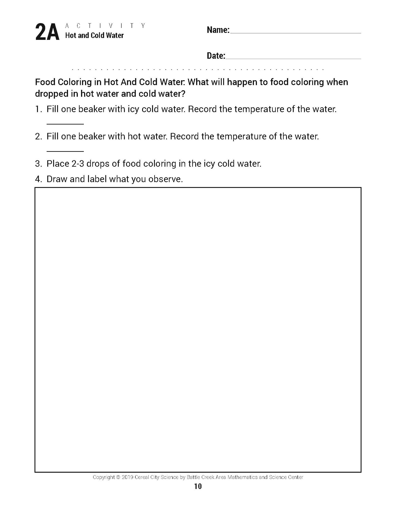
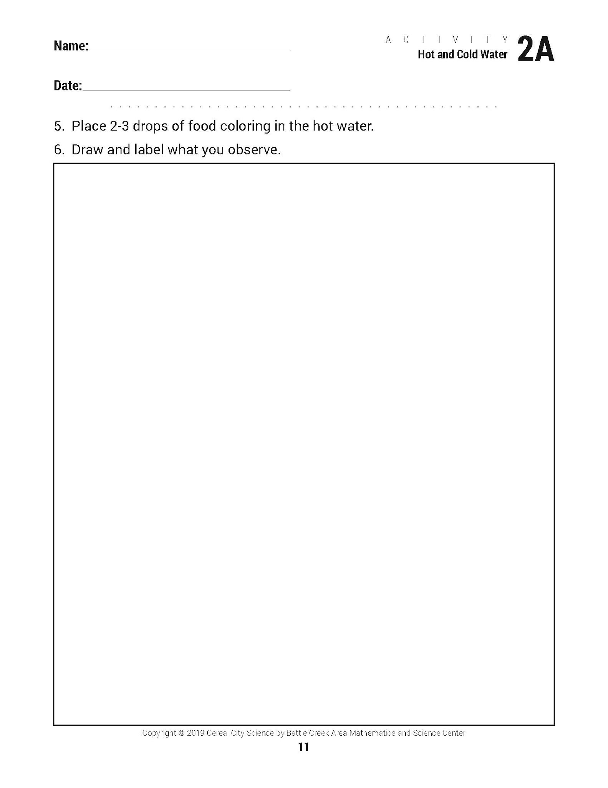
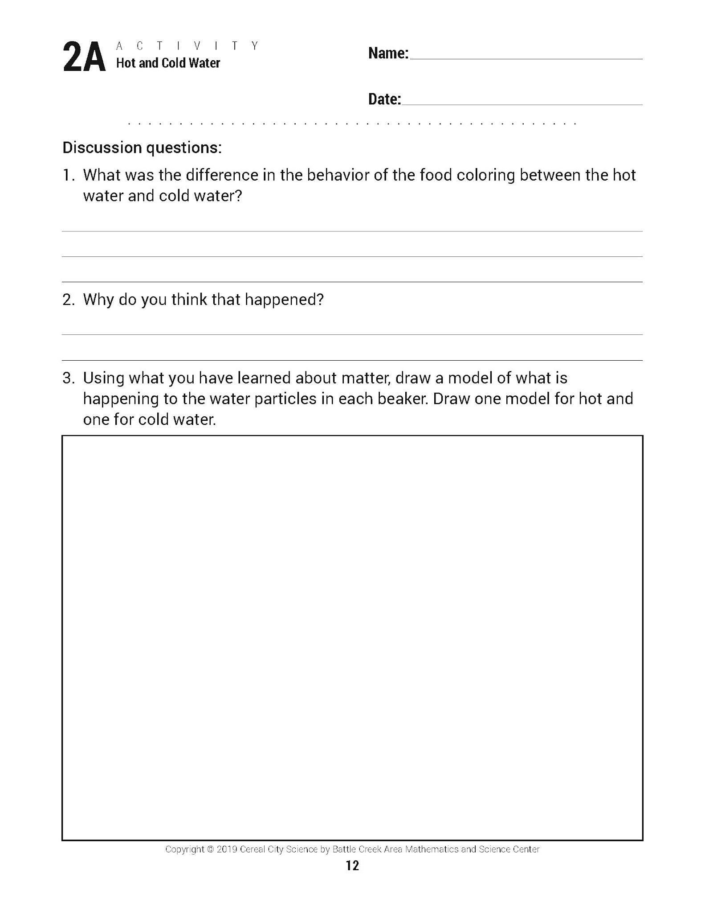
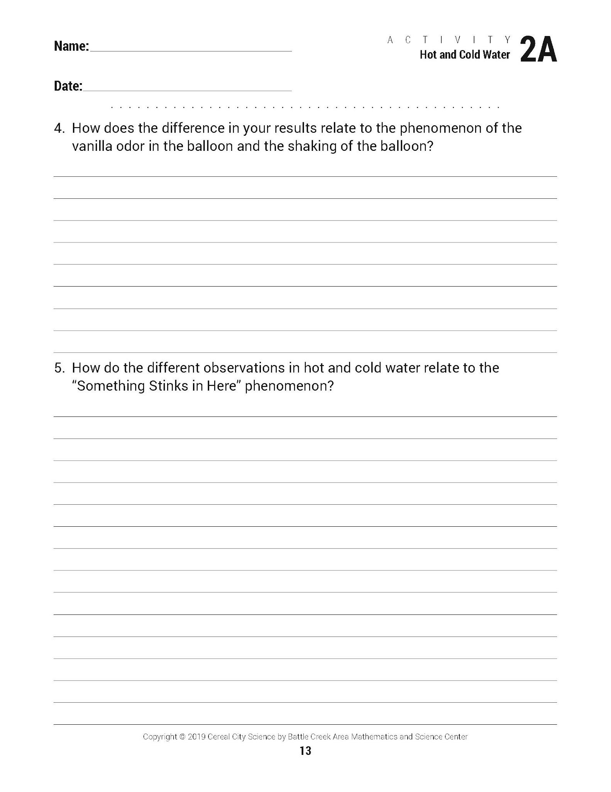
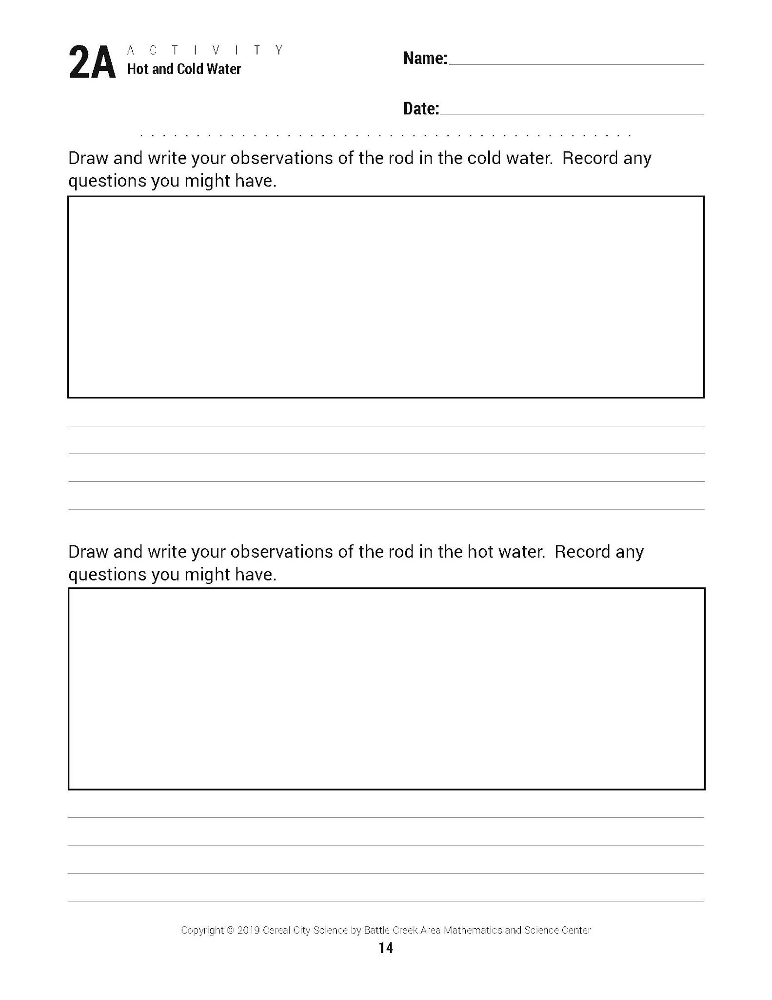
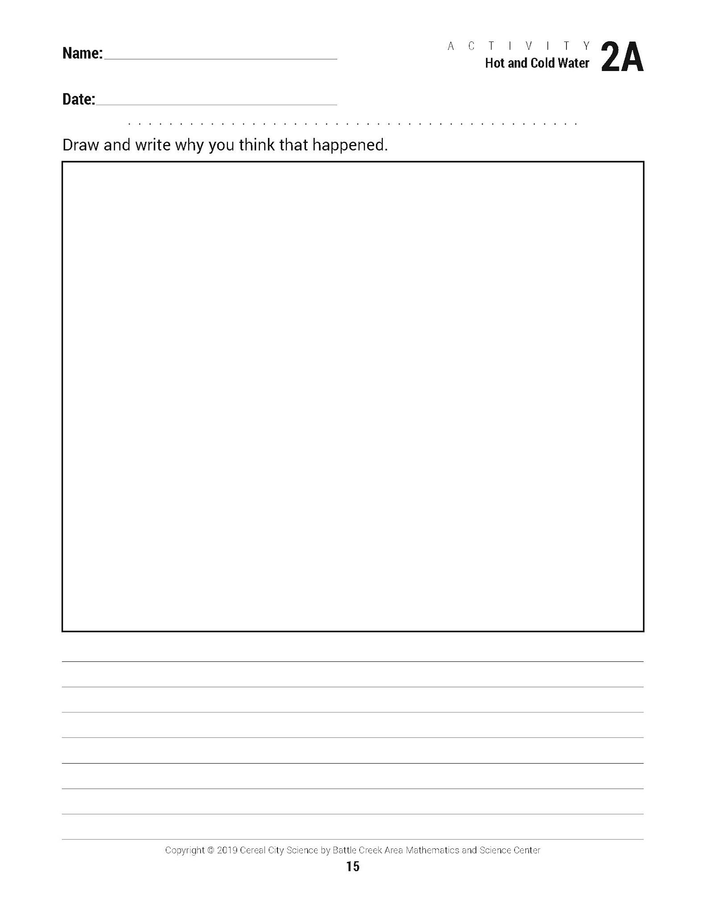

Activity 2A • Hot and Cold WaterJournal page 10 of 84
Name: ______________________________Date: _______________
Food Coloring in Hot And Cold Water. What will happen to food coloring when dropped in hot water and cold water?
1. Fill one beaker with icy cold water. Record the temperature of the water.
2. Fill one beaker with hot water. Record the temperature of the water.
3. Place 2-3 drops of food coloring in the icy cold water.
4. Draw and label what you observe.
Compare with original journal page 10
This is the unmarked scanned page for checking original diagrams, exact wording, or layout. The editable HTML content is above.

Activity 2A • Hot and Cold WaterJournal page 11 of 84
Name: ______________________________Date: _______________
5. Place 2-3 drops of food coloring in the hot water.
6. Draw and label what you observe.
Compare with original journal page 11
This is the unmarked scanned page for checking original diagrams, exact wording, or layout. The editable HTML content is above.

Activity 2A • Hot and Cold WaterJournal page 12 of 84
Name: ______________________________Date: _______________
Discussion questions: ]. What was the difference in the behavior of the food coloring between the hot water and cold water?
2. Why do you think that happened?
3. Using what you have learned about matter, draw a model of what is happening to the water particles in each beaker. Draw one model for hot and one for cold water.
Compare with original journal page 12
This is the unmarked scanned page for checking original diagrams, exact wording, or layout. The editable HTML content is above.

Activity 2A • Hot and Cold WaterJournal page 13 of 84
Name: ______________________________Date: _______________
4. How does the difference in your results relate to the phenomenon of the vanilla odor in the balloon and the shaking of the balloon?
5. How do the different observations in hot and cold water relate to the “Something Stinks in Here” phenomenon?
Compare with original journal page 13
This is the unmarked scanned page for checking original diagrams, exact wording, or layout. The editable HTML content is above.

Activity 2A • Hot and Cold WaterJournal page 14 of 84
Name: ______________________________Date: _______________
Draw and write your observations of the rod in the cold water. Record any questions you might have.
Draw and write your observations of the rod in the hot water. Record any questions you might have.
Compare with original journal page 14
This is the unmarked scanned page for checking original diagrams, exact wording, or layout. The editable HTML content is above.

Activity 2A • Hot and Cold WaterJournal page 15 of 84
Name: ______________________________Date: _______________
Draw and write why you think that happened.
Compare with original journal page 15
This is the unmarked scanned page for checking original diagrams, exact wording, or layout. The editable HTML content is above.
